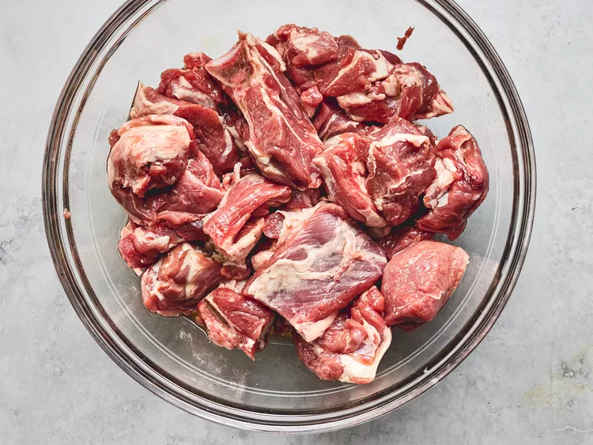
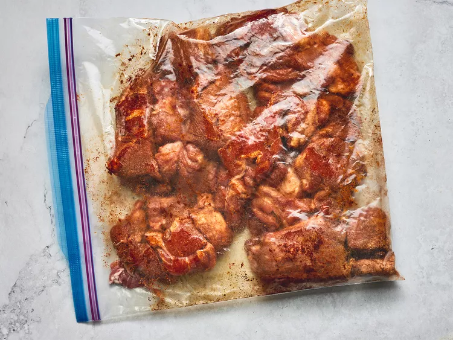
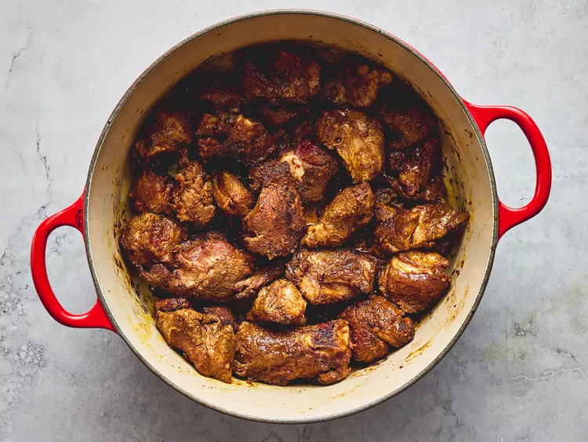
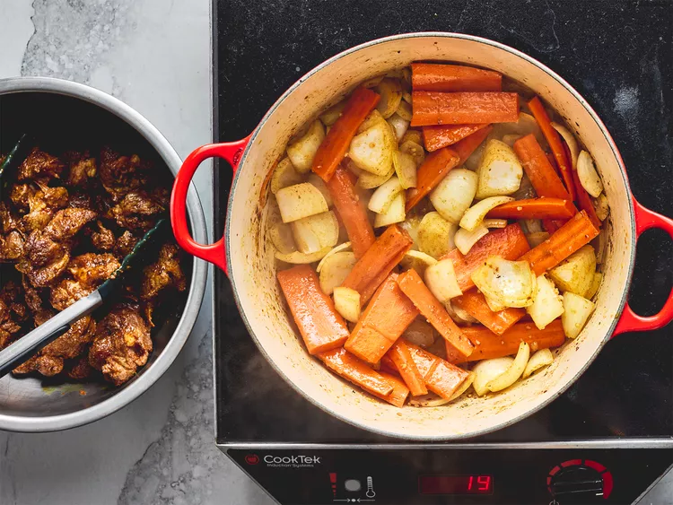

When I first made this Moroccan lamb tagine, I left the kitchen window open. The smell attracted several neighbors and my husband who came in and said that it smelled so good that he hoped it was coming from our house and not from someone else's! If you don't have a tagine, you can use a heavy-bottomed pot.
2 pounds lamb meat, cut into 1 ½ inch cubes
3 tablespoons olive oil, divided
2 teaspoons paprika
1 teaspoon ground cinnamon
1 teaspoon kosher salt
¾ teaspoon garlic powder
¾ teaspoon ground coriander
½ teaspoon ground cumin
½ teaspoon ground cardamom
½ teaspoon ground ginger
¼ teaspoon ground turmeric
¼ teaspoon cayenne pepper
¼ teaspoon ground cloves
1 pinch saffron
2 medium onions, cut into 1-inch cubes
5 carrots, peeled, cut into fourths, then sliced lengthwise into thin strips
3 cloves garlic, minced
1 tablespoon freshly grated ginger
1 lemon, zested
1 (14.5 ounce) can homemade chicken broth or low-sodium canned broth
1 tablespoon sun-dried tomato paste
1 tablespoon honey
1 tablespoon cornstarch (Optional)
1 tablespoon water (Optional)
Place lamb and 2 tablespoons olive oil in a large bowl and toss to coat; set aside.
Mix paprika, cinnamon, salt, garlic powder, coriander, cumin, cardamom, ginger, turmeric, cayenne, cloves, and saffron together in a large resealable bag. Add lamb to the bag and toss to coat well. Refrigerate for at least 8 hours, preferably overnight.
Heat remaining 1 tablespoon olive oil in a large, heavy-bottomed pot over medium-high heat. Add 1/3 of the lamb and brown well, 5 to 7 minutes. Remove to a plate and repeat to cook remaining two batches of lamb.
Add onions and carrots to the pot and cook for 5 minutes. Stir in garlic and ginger; continue cooking for an additional 5 minutes. Return lamb to the pot and stir in lemon zest, chicken broth, tomato paste, and honey. Bring to a boil, then reduce heat to low. Cover and simmer, stirring occasionally, until meat is tender, 1 ½ to 2 hours.
If the consistency of tagine is too thin, you may thicken it with cornstarch and water slurry during the last 5 minutes.
Serve over couscous.